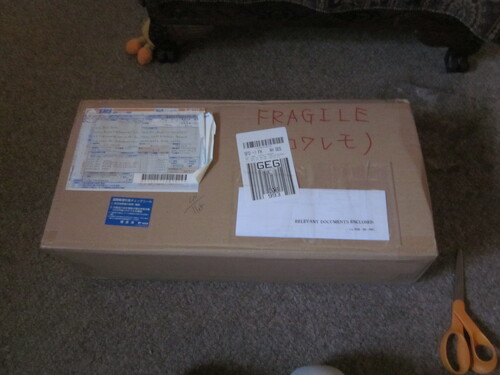
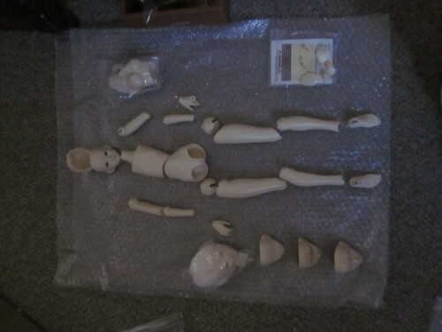
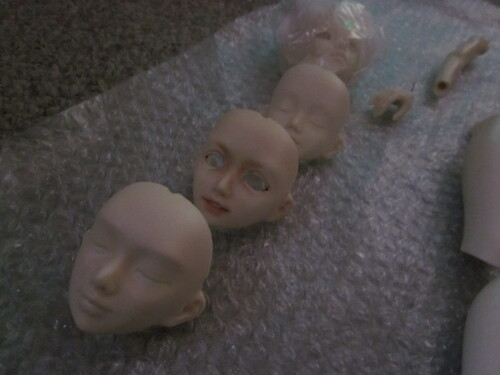
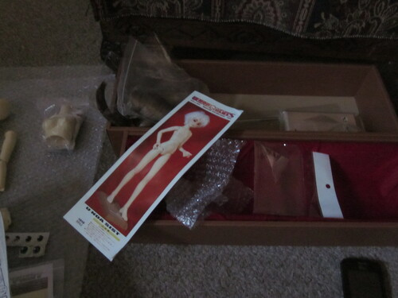

once upon a time, it was moderately difficult and expensive to get an unoa
i learned about mandarake and dollyteria and found out they werent so impossible to get after all. i watched and waited and finally a sist popped up! i bought her for a wonderful price which now would be considered $100 too much, but then was insane
lusis was always my love, but i figured finding a lusis faceplate would be much more simple than finding a full lusis. the item came with extra faceplates which i assumed was sist bully, sist sleeping, etc, but was 2 of the boys, oyasumi, and lusis! i was so happy! I love oyasumi so i was happy she was in the set as well
   she came completely unassembled. she had to sit in her box for 8-10 years before being put together. i love kits! i wish more companies offered them. i wish i had bought a volks kit back in the day too
she was already quite evenly yellowed when i got her and she still is my most yellow doll. it doesnt bother me though and i love her very much. she was a dream come true!